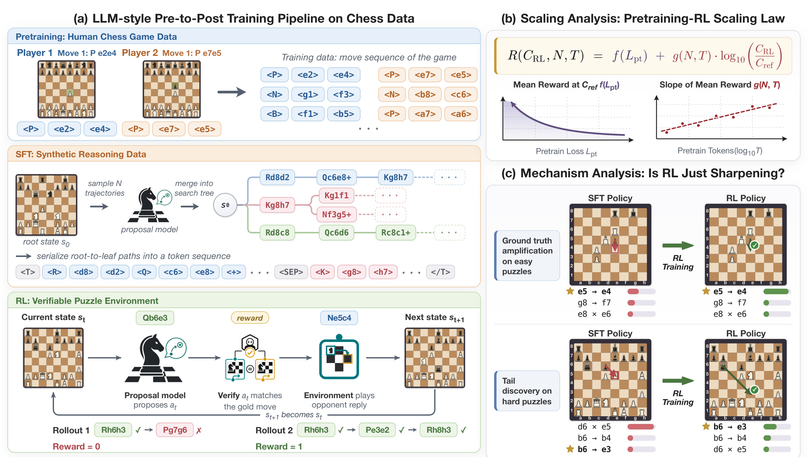
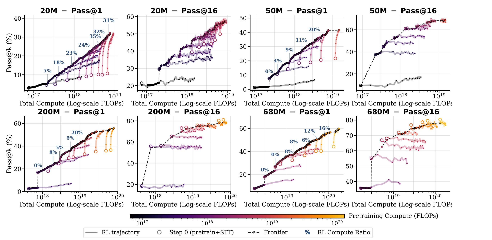
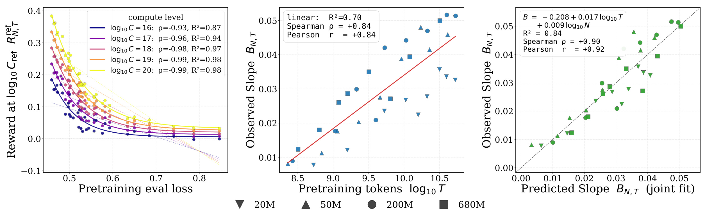
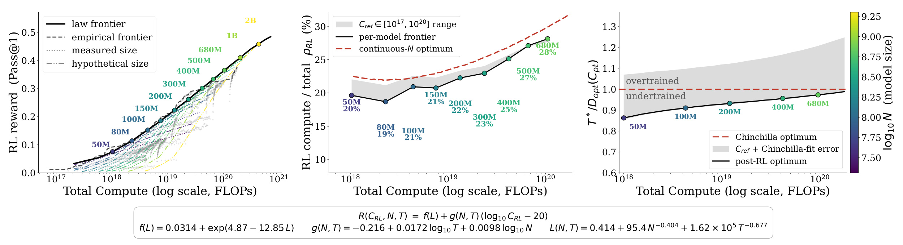
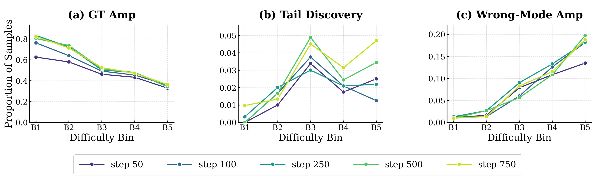
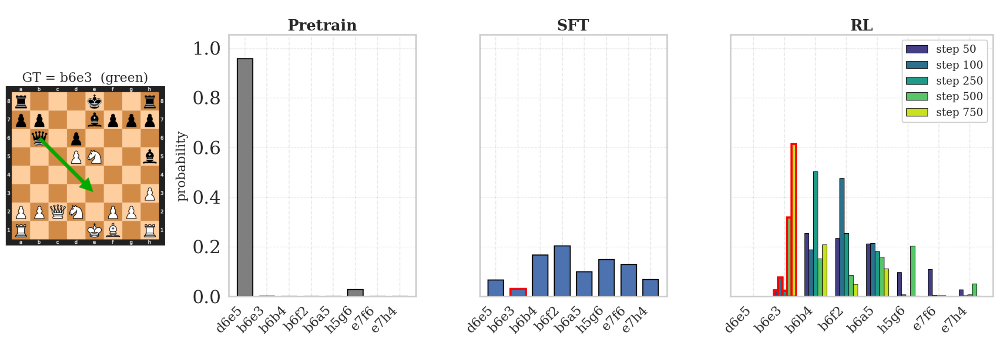
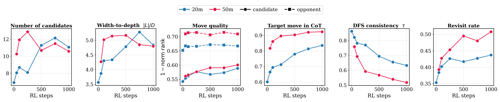
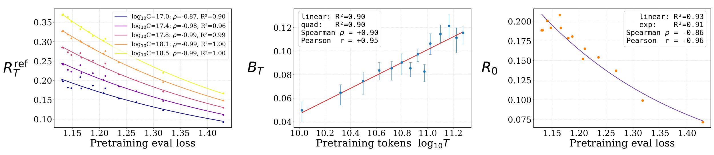

Understanding Reasoning from Pretraining to Post-Training
这篇论文研究一个常被训练流水线切割开的问题：预训练形成的先验，究竟怎样决定后续监督微调与强化学习的收益；而强化学习又具体改变了策略分布中的什么。论文由 Jingyan Shen、Ang Li、Salman Rahman、Yifan Sun、Micah Goldblum、Matus Telgarsky 和 Pavel Izmailov 合作完成，一作主机构为纽约大学，合作机构包括 Modal Labs、加州大学洛杉矶分校、伊利诺伊大学厄巴纳—香槟分校与哥伦比亚大学。论文入口为 arXiv:2607.16097，官方代码、模型和数据入口已核验，其中代码仓库为 pavelslab-nyu/pre2post-chess。
作者没有直接在不可控的万亿 token 语料和前沿模型上做昂贵扫描，而是把棋类改造成一套与大模型相似的“预训练—合成推理轨迹 SFT—可验证奖励 RL”管线。这个试验台让模型规模、预训练 token、预训练损失、RL 算力、逐状态走法分布和推理树结构都可测，从而把“训练更多先验”与“追加更多经验”之间的关系变成可拟合、可反驳的问题。
RL 后训练往往被与此前的预训练割裂研究，因此两个基础问题仍没有定量答案：模型规模与预训练数据如何决定追加 RL 算力的回报，RL 又究竟是在放大既有策略，还是能从低概率尾部发现此前几乎不会出现的正确行为？
1. 背景和问题
1.1 不能把预训练与 RL 当成互不相关的两个阶段
典型推理模型先在大规模人类文本上做自回归预训练，再通过监督微调学习回答格式和推理轨迹，最后用可验证奖励强化学习提升答案正确率。已有缩放律通常分别回答两个局部问题：给定预训练算力时怎样选择参数量和数据量，或者给定一个固定初始化时 RL 曲线怎样随训练步数变化。真正部署时，团队面对的却是同一个总预算：多训练一些 token 会得到更强的起点，但会挤压可以用于 RL rollout、采样和更新的算力；较早切换到 RL 能获得更多交互，却可能因为先验过弱而始终探索不到有奖励的行为。
论文把这个矛盾写成两个研究问题。第一个是计算分配：在总 FLOPs 和模型规模固定时，预训练 token 数与 RL compute 应如何分配，哪种组合形成最终性能前沿？第二个是机制归因：RL 获得的 pass@1 增益，是简单提高 SFT 已偏好正确答案的概率，还是能把原本几乎不采样的正确动作拉出尾部？这两个问题不能只看最终准确率。若 RL 只是锐化，更多预训练可能更值；若 RL 能稳定发现新行为，后训练应占更大预算。更麻烦的是，两种现象可能同时发生，并且随任务难度改变。
pass@1 与 pass@k 的差异正是判断机制的线索。pass@1 看一次采样的命中率，偏好概率质量集中到一个答案；pass@16 则更接近策略支持集是否仍覆盖正确解。一个模型完全可能在 RL 后 pass@1 上升，同时把概率从许多候选压到少数高概率模式，使大 k 覆盖不升反降。因此，“RL 指标上升”等价于“推理能力普遍增加”并不成立。作者需要同时追踪概率质量如何移动、正确动作是否本来就在 top-k、错误高概率模式是否也被放大，以及显式推理轨迹的搜索宽度与深度是否真的改善。
1.2 为什么使用棋类，而不是直接扫描前沿语言模型
自然语言预训练语料规模巨大、来源异质，研究者很难判断某个推理模式究竟在预训练中见过，还是在 RL 中新形成；开放式答案还缺少逐步真值，通常只能在结尾判对错。要跨预训练规模、模型规模与 RL compute 做系统扫描，成本也会快速失控。棋类则提供三项关键控制：动作空间有限且合法走法可枚举；棋局前缀唯一确定棋盘状态；Lichess 棋题带有唯一最优解线，环境可以在每一步核验模型动作，并在正确时自动给出对手应答。
作者的目标不是训练最强棋手，而是构造一个与语言模型训练结构同构、同时又能观测内部决策的实验系统。预训练仍是 next-token prediction，SFT 仍让模型先生成一段“思考”再给答案，RL 仍从 SFT policy 出发用 outcome reward 更新；不同之处只是 token 变成棋子、来源格、目标格和特殊标志。这个替换把自然语言中模糊的“新推理”具体化为：某个真值走法在 SFT 下概率低于 0.05，经过 RL 后进入 top-3，因而可被明确归为 tail discovery。
1.3 论文要建立的证据链
论文不是先假设一条全局缩放律再寻找吻合点，而是按四层证据推进。首先，在 10 种参数规模、11 个预训练算力预算上验证棋类预训练确实存在 IsoFLOP 最优区，并检验合成推理轨迹 SFT 是否优于只学答案。其次，从 20M、50M、200M、680M 四个规模的 36 个预训练—RL 组合中构造经验前沿，观察同一总预算下何时应该继续预训练、何时应该转向 RL。再次，用每条 RL 轨迹的局部对数线性拟合，把最终表现拆成“参考算力处的性能水平”与“每增加十倍 RL compute 的增益斜率”，再回归到预训练损失、token 和模型规模。最后，作者对每个棋局状态重建合法走法分布，配合可解析的 reasoning tree，区分正确模式放大、尾部发现和错误模式放大。
这种证据链的价值在于把预测与解释分开：缩放拟合回答“给定先验和算力可能达到哪里”，策略演化回答“性能为何这样变化”。但它也预先限定了结论边界：拟合发生在未饱和的局部 RL 区间，主实验是干净的棋类环境，数学域迁移只使用一个 1B 架构。读者应把它视为跨阶段训练科学的受控证据，而不是可直接套到任意前沿模型的预算公式。
还有一个常被忽略的识别难题：即使在同一总算力下观察到“更长预训练的 checkpoint 经 RL 后更好”，也不能立刻说原因是预训练给出了更高起点。较强 checkpoint 可能同时改变可探索动作的支持集、奖励出现频率以及梯度方差；同样，较陡的 RL 曲线也可能只是评测尚未饱和的结果。论文因此把一条轨迹分为参考性能与局部斜率，再到 B3—B4 上拟合，并用 B1/B2 的饱和失败案例反查假设。这个做法把相关性限制在明确的算力与难度区间，避免把不同阶段的综合作用压成一句“基础模型越强，RL 越有效”。
棋类还让“动作”与“推理 token”分离：模型可以生成许多候选路径，但环境最终只核验被提交的求解方棋步。于是作者能判断 reward 增长来自候选生成更好、提交选择更准，还是分布整体变尖。这对自然语言同样关键：长 CoT、更多采样或更高置信度都不自动等于更深推理。若不记录中间候选及其概率，训练后看似更好的单次答案很可能掩盖正确支持集变窄，或掩盖某些困难状态上的错误模式锁定。
2. 方法
2.1 棋类可控试验台与人类棋局预训练
每步棋被序列化为四个 token：棋子类型、来源格、目标格和特殊标志；特殊标志表示升变、王车易位、吃过路兵、将军或将死。完整词表只有 81 个 token，任何合法前缀都确定唯一棋盘状态。预训练数据来自 2022 年 Lichess Blitz 与 Rapid 人类棋局，模型同时预测双方后续走法。作者可按棋手 Elo、棋局长度和 token 预算采样语料，由此让参数量 \(N\)、预训练 token 数 \(T\) 与验证损失 \(L_{\mathrm{pt}}(N,T)\) 成为显式控制变量，而不需要猜测自然语言数据混合中的隐变量。
模型采用 dense Qwen3 风格 decoder-only Transformer，共训练 5M、10M、20M、32M、50M、100M、200M、410M、680M 与 1B 十种规模。预训练只学习人类走法分布，并不会看到显式搜索轨迹。棋题阶段则改变交互协议：模型只控制求解方，若当前动作正确，环境附加对手的真值应答后进入下一状态；任一步错误都会结束 episode。同一个 token 模型因此既能在预训练中学习人类策略先验，也能在后训练中接受逐状态可验证反馈。

图中还把“训练对象”与“分析对象”明确分开：左栏说明共享自回归 policy 如何经过三阶段获得，右栏说明研究者怎样从 checkpoint 读出参考性能、局部斜率和概率迁移。这样可以避免把事后拟合的缩放函数误写成模型训练模块，也避免把棋盘上可核验的逐步动作与模型内部生成的候选轨迹混为同一种监督信号。
Figure 1 左侧给出三阶段信息流。预训练把双方棋步压成连续 token；SFT 从根状态采样多条延续、合并共享前缀，再序列化为模型自己的搜索轨迹；RL 中模型一次只出求解方动作，环境核验并回放对手应答，只有完整解线全部正确才得 1。右上把联合缩放律分成两个量：预训练损失决定固定参考 RL compute 处的均值，预训练 token 与模型规模决定曲线斜率。右下则强调同一种 RL 更新在容易题上可能只是放大既有正确模式，在困难题上却可能把正确动作从尾部拉出。图的关键不是“棋类像语言”，而是三个训练阶段共享同一自回归策略，同时每个中间状态又有可枚举动作和可核验真值。
2.2 合成搜索轨迹与监督微调
对棋题根状态 \(s_0\)，作者用一个预训练 proposal policy 采样 \(K\) 条可能延续。多条延续常共享开局动作，因此先合并成前缀树；若合并后有 \(m\le K\) 个叶子，就把每条根到叶路径记为 \(\tilde{\tau}_i\)，再按深度优先顺序串成思考文本：
符号解释：\(r\) 是监督微调使用的合成推理串；\(\tilde{\tau}_i\) 是共享前缀树的一条根到叶路径；\(m\) 是不同叶路径数；<T> 与 </T> 标记思考边界，<sep> 分隔候选路径。这个构造的要点是推理来自模型自己的分布，而非 Stockfish 直接给出的专家搜索文本，因此 SFT 教的是“怎样把若干自生成候选组织成可选择的搜索记录”。
得到 \(r\) 后，训练序列是 \(w=(r,\tau^\star)\)，其中 \(\tau^\star=(a_1,o_1,a_2,o_2,\ldots,a_H)\) 是最佳解线，\(a_t\) 为求解方动作，\(o_t\) 为环境应答。损失只覆盖推理 token 与求解方动作；对手动作被 mask，因为推理时它们由环境提供。这个细节避免模型为不可控的环境动作承担梯度，也保持了训练与交互协议一致。SFT 的输出不是一个静态答案，而是能先展开若干棋步候选、再提交动作的 policy。
作者专门比较了只训练目标动作序列与训练“推理串+目标解线”两种 SFT。前者提高 pass@1，却不能改善 pass@8 或 pass@16，说明它主要把质量压向一个答案，并没有形成更有用的候选支持集；后者能改善所有 pass@k，因而被用于后续 36 条 RL run。这个消融很重要：RL 的初始化不是普通指令微调，而是已经具备可解析搜索结构的策略，后续才能分析 RL 改变的是搜索内容、提交选择还是单纯概率温度。
2.3 可验证棋题环境中的 GRPO
RL 从 SFT policy 初始化，仍让模型先生成推理轨迹再提交求解方动作。环境不评价推理文本是否像专家，只核验被执行动作能否逐步匹配唯一解线；这样奖励无模型裁判偏差，但信用分配也最稀疏。同一 prompt 的多条 rollout 为 GRPO 提供组内相对基线，最终奖励写成整条解线的二元核验：
符号解释：\(\zeta\) 包含模型生成的 reasoning trace 与随后执行的动作序列；\(s_0\) 是棋题根状态；\(a_t\) 是模型在第 \(t\) 个求解回合的动作；\(a_t^\star\) 是唯一真值解线中的动作；\(H\) 是需要模型完成的求解步数。指示函数要求所有求解方动作都匹配，任何一步出错都使奖励为 0。
作者采用 GRPO，以同一 prompt 的多条 rollout 做组内相对优势更新。棋类主实验的价值不在于某个特殊奖励技巧，而在于 reward 没有模型评分器噪声：走法与真值完全匹配即可验证。训练时模型生成 reasoning trace，再提交棋步；环境只在动作正确时进入下一状态。评测时沿用相同协议，也不额外挂 MCTS 或 beam search。于是 RL 获得的能力必须表现为 policy 自身的推理 token 与走法分布变化，不能归因于测试时搜索器。
二元整局奖励依然非常稀疏：困难题中一个深层错误会抹掉前面所有正确步骤的回报，RL 既可能把正确尾部动作抬高，也可能因为有限采样而进一步强化某个错误高概率模式。 这正是论文后续同时考察 pass@1、pass@k、逐状态分布与 reasoning tree 的原因。
2.4 联合缩放拟合与策略演化诊断
对每条固定 \(N,T\) 的 RL run，作者只拟合尚未饱和的局部区间。这样做不是假定奖励会无限增长，而是把 sigmoid 曲线早期对 \(\log_{10}C\) 的变化近似成直线，并把不同长度的 run 对齐到同一个参考算力 \(C_{\mathrm{ref}}\)。一条轨迹因此被分解为参考点高度和局部增长速度，具体写成：
符号解释：\(C\) 是累计 RL FLOPs；\(R_{N,T}(C)\) 是对应 checkpoint 的 pass@1；\(R^{\mathrm{ref}}_{N,T}\) 是拟合曲线在参考算力处的性能水平；\(B_{N,T}\) 是 RL compute 增加十倍带来的局部性能增量。它不是无界增长假设，只是 sigmoid 在早期非饱和区间的一阶近似。
两个系数通过每条 run 的普通最小二乘得到。回归只使用该 run 在不同累计 RL FLOPs 下的 checkpoint，不把其他模型或其他预训练锚点的数据提前混入；先得到每条轨迹自己的截距与斜率，下一步才研究这些系数能否被预训练属性预测。其优化目标为：
符号解释：\(N_C\) 是一条 RL run 上被评测的 checkpoint 数；\(a\) 拟合参考性能，\(b\) 拟合局部斜率；\(C_i\) 与 \(R_{N,T}(C_i)\) 是第 \(i\) 个观测点。改变 \(C_{\mathrm{ref}}\) 只会平移截距，不改变斜率或单条直线的拟合质量。
随后把两个系数接回预训练属性。作者用非线性函数 \(f\) 描述损失与参考性能的关系，用 \(\log_{10}T\) 和 \(\log_{10}N\) 的联合线性函数 \(g\) 描述局部斜率；这种分工保留了“起点质量”和“继续学习速度”可能受不同预训练统计量控制的假设，得到论文的核心联合律：
符号解释：\(L_{\mathrm{pt}}(N,T)\) 是预训练验证损失；\(f\) 把损失映射为参考 RL compute 下的性能水平；\(g\) 用 \(\log_{10}T\) 与 \(\log_{10}N\) 预测局部斜率；\(C_{\mathrm{RL}}\) 是 RL FLOPs。预训练在这里通过两个通道影响 RL：更低损失抬高同等 RL 算力下的水平，更多数据暴露又提高继续追加 RL 算力时的局部斜率。
要把拟合律转成预算前沿，作者不能直接比较不同 run 的最后一个点，而要让每个候选 recipe 满足同一总 FLOPs 约束。预训练成本近似为 \(6NT\)，SFT 成本按固定 recipe 扣除，余额才是 \(C_{\mathrm{RL}}\)；随后在经验支持范围内枚举 token 与 RL 分配。对固定模型规模 \(N\) 与总预算 \(C\)，目标写为：
符号解释：\(\widehat{R}\) 是联合律预测的奖励；\(R_N^\star(C)\) 是给定模型规模和总预算能达到的最佳预测奖励；约束中 \(C_{\mathrm{RL}}=C-6NT-C_{\mathrm{SFT}}\)，即先扣除近似预训练 FLOPs 与固定 SFT 成本。作者在每个预算上枚举约 400 个可行分配，再围绕最佳区域细化网格，因此结果是所评估候选集内的最优，而不是连续域的严格全局保证。
机制分析不能直接用生成出的一个答案代表策略，因为 SFT/RL 会先采样 reasoning trace，同一棋盘在不同思考路径后可能提交不同动作。枚举全部轨迹不可行，直接看一次采样又会把采样噪声当成 policy 变化；作者因此为每个状态采样 \(K=128\) 条轨迹，对每条轨迹后的合法走法分布求平均，再把条件概率近似边缘化：
符号解释：\(m\in\{\mathrm{SFT},\mathrm{RL}\}\)；\(a\) 是状态 \(s\) 下的合法走法；\(r^{(k)}\) 是从根状态采样的第 \(k\) 条推理轨迹；\(\pi(a\mid s,r^{(k)})\) 是给定轨迹后的动作分布。平均后得到可与预训练 policy 对齐的逐状态走法分布。
为检验 RL 是否只是统一温度锐化，论文先构造一个明确的零假设：若 RL 只把 SFT logits 乘同一个系数，那么每个状态的动作排序基本不变，高概率动作统一变得更尖。把这个假设写成归一化后的幂族，才能测量 RL 分布中有多少变化无法由单一温度解释。SFT 分布的幂变换为：
符号解释：\(p_s(a)\) 是 SFT 在状态 \(s\) 对动作 \(a\) 的概率；\(\mathcal{A}(s)\) 是合法走法集合；\(\alpha>1\) 抬高高概率动作、表示锐化，\(\alpha<1\) 表示展平。最接近 RL 分布 \(q_s\) 的全局系数通过下式求得：
符号解释：\(q_s\) 是 RL 走法分布；\(w_s\) 默认对状态均匀加权；\(D_{\mathrm{KL}}\) 衡量 RL 与幂锐化 SFT 的差异。若 \(\alpha^\star>1\) 但残差仍大，就表示“平均更尖”成立，却不足以解释具体概率质量搬运。
作者还从 logit 几何做第二个检验。中心化会消去每个状态自己的归一化常数；如果 RL 真是纯幂锐化，那么中心化后的 RL log-probability 应当是 SFT 对应量的过原点线性缩放。斜率衡量平均锐化强度，拟合优度衡量单系数能解释多少动作间变化，具体拟合为
符号解释：\(y_s(a)\) 对 \(q_s(a)\) 做同样的中心化；\(\beta>1\) 表示 centered-logit 空间中的平均锐化；\(R^2\) 衡量 RL 分布能否被 SFT logits 的单一缩放解释。论文进一步按正确动作在初始/更新后 top-3 中的成员关系和概率变化，定义正确模式放大、top-k 修正、尾部发现、正确模式回退、错误模式放大与其他类别。这个分类把“新能力”从含混叙事变成可统计的状态转移。
3. 实验结果
3.1 数据、规模与评测口径
棋类预训练池包含 54B token 的 Lichess 人类棋局；后训练使用 156K 个质量过滤棋题，按 Elo 难度划分 B1 到 B5；测试集有 1,480 个战术题，并平衡主题与解线长度。预训练、后训练与测试集在棋盘状态层面互斥，降低直接污染。由于现有模型几乎不能解 B5，聚合 pass@k 主要报告 B1—B4，B5 保留给难度分层的机制分析。
预训练扫描覆盖 10 种模型规模与 11 个算力预算，从 \(6.5\times10^{16}\) 到 \(6.5\times10^{19}\) FLOPs，对应约 200M 到 52B token。RL 主扫描选择 20M、50M、200M、680M 四种规模，各自从 8—11 个预训练 checkpoint 出发，采用同一 SFT recipe，再运行 1,000—5,000 个 RL step，共形成 36 个预训练—RL 组合。论文以 FLOPs 比较阶段分配，明确提醒相同 FLOPs 不等于相同 wall-clock：RL 的 rollout、环境和通信开销可能让真实服务成本不同。
3.2 固定总算力下的经验前沿
对每个模型规模和总预算，作者遍历可用预训练 checkpoint，并把剩余预算用于 RL；最终表现最好的组合构成前沿。若前沿选择较早 checkpoint，表示更弱初始化换来的额外 RL compute 更值；若选择较晚 checkpoint，则说明先验不足使 RL 无法补偿。这个定义避免把“训练步数更多”误当成单调优势，因为比较始终受同一个总 FLOPs 约束。

Figure 2 每个规模都把 pass@1 与 pass@16 并排。彩色曲线是一条预训练 checkpoint 启动后的 RL 轨迹，空心圆是 RL 前起点，黑色虚线连接当前预算下的最优点。20M 的 pass@1 前沿上，标注的 RL compute 份额从低预算处约 5% 增至高预算处约 32%，说明先验足够后，边际预算逐渐转向 RL；50M、200M、680M 也呈相同方向。相反，pass@16 在较大模型上常接近平坦，部分轨迹还下降：RL 把单次命中率推高，却没有稳定扩大多样采样覆盖。这个差异直接反驳“只要 pass@1 上升就代表策略支持集整体更好”的读法，也为后面的错误模式放大提供指标层线索。
经验前沿还有一个重要负结果：在低总预算区，提前进入 RL 得到的更多更新并不能弥补较差初始化，说明 RL 明显受先验限制。只有当预训练到达一定质量后，继续堆相同量级的预训练 FLOPs 才出现边际递减。这一观察支持“先把模型训练到能在稀疏奖励环境中看到正样本，再扩大 RL”，但论文没有给出跨任务通用的切换阈值。
3.3 联合缩放律的拟合与验证
作者在不易饱和的 B3—B4 上拟合局部缩放。参考算力 \(\log_{10}C_{\mathrm{ref}}\) 从 16 增到 20 时，预训练损失与参考性能的 Spearman 相关绝对值从 0.93 收紧到 0.99；采用 \(10^{20}\) FLOPs 作为统一参考点后，offset-exponential 的 \(f(L)\) 拟合 \(R^2\) 达 0.98。局部斜率 \(B_{N,T}\) 与 \(\log_{10}T\) 的 Pearson 相关为 +0.84；把 token 与模型规模联合回归，\(R^2=0.84\)，Spearman 为 +0.90，Pearson 为 +0.92，且 token 系数约是模型规模系数的两倍。

Figure 3 左图说明更低的预训练验证损失对应更高的固定 RL compute 性能，而且 RL 算力越大，排序越接近单调；中图说明更多预训练 token 对局部斜率有明显正相关，但同样 token 附近仍有模型规模与 run-level 噪声；右图把联合模型的预测斜率与观测斜率对齐，多数点贴近对角线。这里最值得保留的区分是：\(f\) 的输入是损失，\(g\) 的主要输入是 token 暴露。损失像“先验质量摘要”，token 则可能反映模型在预训练中积累了多少可被 RL 重组的局部模式，两者不能简单合并成一个 compute 数字。
论文也做了严格度不同的留出验证。逐 run 留一时，Chinchilla 预测损失输入的总体 reward RMSE 为 0.0194；逐模型规模留出时 RMSE 为 0.0242，只比 run-level 留一高约 25%，预测参考奖励与观测值的 Pearson 相关仍有 +0.954，预测斜率相关为 +0.792。这个结果表明拟合不只是记住单条轨迹，但 680M 留出误差已是观测上沿的最好经验估计，因此对 1B、2B 的曲线属于至少同量级不确定性的外推。
在容易的 B1/B2 上，较大模型很快靠近饱和，局部斜率反而被压低；这不是“更多预训练伤害 RL”，而是对数线性近似遇到 sigmoid 平台。20M 是唯一足以进入饱和区、能较可靠估计 \(A_\infty\) 的模型族，其十条 run 的天花板从 0.12 到 0.47，预训练损失对天花板的线性拟合 \(R^2=0.90\)。因此联合律应在未饱和、与训练扫描相近的范围使用，不能延伸为 RL 永远按对数 compute 增长。
3.4 从拟合律推演计算最优分配
作者把联合律与棋类 Chinchilla 损失面结合，评估 20M 到 2B 的 13 个模型规模、\(10^{17}\) 到 \(10^{21}\) FLOPs 的 260 个总预算；每个固定规模与预算上搜索约 400 个 \((T,C_{\mathrm{RL}})\) 分配，再取跨模型上包络。为了避免对数线性曲线预测出比 SFT 起点更低的奖励，优化还加了由 \(R_0(L)\) 指数拟合得到的物理下界。

Figure 4 左图中拟合前沿与实际测量前沿较接近，并随总预算增加切换到更大模型；中图显示每个模型首次进入全局前沿时，RL 最优份额从 50M 附近约 20% 上升到 680M 附近约 28%，连续模型规模的红色虚线也上行；右图把最优预训练 token 与相同预训练算力下的 Chinchilla 分配比较，点逐渐靠近 1，但没有显示应系统性偏离 Chinchilla 的证据。图底部公式是原组合图的一部分，列出实际拟合的 \(f(L)\)、\(g(N,T)\) 与 \(L(N,T)\)，让读者能看到“份额上升”来自三个经验函数的联立，而不是直接测得的普适常数。
这个前沿必须谨慎解释。优化面在峰值附近较平，许多分配的 reward 差距只有 0.001—0.005；\(g(N,T)\) 的噪声也明显大于 \(f(L)\)。所以更可靠的结论是预算扩大时，近最优分配带整体向更高 RL 份额移动，而不是“680M 必须使用 28% RL”。真实大模型还要把 SFT、数据生成、reward verification、通信和 wall-clock 纳入成本，论文的 FLOPs 前沿只是训练算法层诊断。
3.5 RL 到底在放大还是发现
全局幂拟合的 \(\alpha^\star\) 与 centered-logit 的 \(\beta\) 都随 RL 增加，表明策略平均变尖；但 ExplainedSharp 仍低，\(R^2\) 从早期约 0.68 下降到 step 750 的 0.56，逐状态系数分布也越来越宽。作者据此放弃“一个温度解释全部状态”，转而看正确动作在 top-3 内外如何迁移。三类主现象分别是：正确动作本来就在 top-3 且概率继续升高的 ground-truth amplification；初始概率低于 0.05、后来进入 top-3 的 tail discovery；正确动作始终不在 top-3，而原本最强错误动作继续升高的 wrong-mode amplification。

五条颜色曲线对应 step 50 到 750，主要难度梯度在不同训练时点都存在，因此结果不是某一个 checkpoint 的偶然快照。尾部发现的比例却没有随 step 严格单调，这提示有限 rollout、二元奖励与策略更新本身仍有明显噪声，不能把任一训练时点的几个百分点解读成稳定的发现速率。
Figure 5 左图显示 B1 中正确模式放大占绝对多数，随难度升到 B5 逐级下降；中图的尾部发现在 B3—B5 更常见，但绝对比例仍只有几个百分点；右图的错误模式放大则从 B1 的约 1% 上升到 B5 接近 20%。这意味着“RL 能发现 SFT 几乎不会出的正确动作”确实有直接证据，但它不是无条件的：越困难的状态越可能同时出现有益探索和错误锁定。pass@1 的上升把这两种质量搬运混在一起，pass@16 的平坦或下降则提示错误高概率模式和支持集收缩没有被完全解决。

Figure 21 把聚合统计落到单个 B5 状态。真值动作是 b6e3：预训练 policy 约 95% 质量压在错误 d6e5 上，正确动作几乎不可见；SFT 展平了分布，却仍没有让 b6e3 成为高概率；进入 RL 后，红框所示的 b6e3 从低概率尾部抬升并最终成为 top move，构成 tail discovery。与此同时，错误 b6b4 在若干训练步仍保留显著质量，属于 wrong-mode amplification。这个案例说明“发现新正确动作”与“清除旧错误模式”是两件不同的事；当前 GRPO 可以完成前者，却不保证完成后者。
对后训练设计而言，这个分解比平均 reward 更有诊断性。若一批样本主要是正确模式放大，继续同类 RL 可能只是提高置信度；若尾部发现比例高，可以检查 rollout 数量、温度和 SFT 支持集；若错误模式放大随难度快速上升，就应考虑更细粒度步骤奖励、反事实负反馈或覆盖导向的正则，而不是只扩大更新步数。
3.6 推理轨迹的结构变化
由于 reasoning trace 是棋步路径集合，作者可以把它解析成前缀树，测候选数量、叶子数与最大深度之比、有效分支因子、模型/对手动作的 Stockfish 质量、真值动作是否出现在 CoT、DFS 序列一致性和重复访问率。相比只看 reasoning token 长度，这些指标能区分“想得更长”“扩了更多候选”“选择质量更好”和“搜索更深”。

Figure 22 对比匹配预训练 compute 的 20M 与 50M run。候选数和 width-to-depth 比整体上升，说明 RL 更偏向扩宽搜索；模型动作与预测对手动作的质量都改善，且真值动作出现在 CoT 中的比例显著增加。与此同时，DFS consistency 持续下降、revisit rate 上升，表示生成序列更常回到此前前缀，而不是严格完成一支后再转下一支。附录进一步显示最大深度几乎不增，真值延续覆盖随目标深度快速衰减：即使 50M 在 step 1000，完整恢复 4-ply 目标线的 rollout 仍很少。
因此 RL 的主要收益更像“更会提出候选，并更会从已考虑的候选中提交较优动作”，而不是形成稳定的长程深搜。这个结论与 Figure 5 相容：扩宽搜索让一部分正确尾部动作进入候选，但稀疏整局奖励没有持续教会模型怎样把正确前缀延伸得更深。若要提升长链推理，SFT 数据可能需要专门奖励深度一致、少回访的搜索轨迹，RL 也需要比最终 0/1 更局部的信用分配。
3.7 数学域迁移验证
为检查棋类规律是否只来自小动作空间，作者固定一个 1B OLMo-2 架构，在 200B token 混合语料上预训练，其中 70% 为 Nemotron-CC-Math-v1、30% 为 Dolma3；从 10B 到 200B token 取 14 个 checkpoint，每个锚点独立退火，再用 NuminaMath-CoT 做一轮 SFT，并在来自 GSM8K、MATH 与 DeepScaler 的 24.9K 题混合数据上做 GRPO。评测包含同分布留出 500 题、GSM8K 与 MATH500，pass@1 由每题 16 次、temperature 0.7 的采样估计。

Figure 6 左图显示，在不同参考 RL compute 上，预训练损失越低，post-RL 参考性能越高；算力越大，相关关系越紧，Spearman 绝对值从 0.87 提升到约 0.99。中图中局部斜率 \(B_T\) 随 \(\log_{10}T\) 增加，线性拟合 \(R^2=0.90\)、Pearson 为 +0.95；右图的 post-SFT 起点 \(R_0\) 同样随预训练损失降低而提高，线性拟合 \(R^2=0.93\)。GSM8K 与 MATH500 的附录图方向一致。它支持“更长预训练既抬高起点，也使后续 RL 改善更快”并非纯棋类偶然，但由于模型规模固定为 1B、只有一条主预训练 run，这仍是定性外部验证，不能估计自然语言域的跨规模最优份额。
4. 总结
4.1 我的判断
这篇论文最强的贡献不是某个棋类指标，而是把预训练与 RL 之间的接口拆成了可测的两个量：预训练损失预测固定 RL compute 下的性能水平，预训练 token 与模型规模预测局部增长斜率。配合经验前沿，它给出一个有条件的预算判断：弱初始化阶段，继续预训练通常比提前做更多 RL 更有效；先验足够后，近最优分配会逐步提高 RL 份额。配合逐状态机制分析，它又避免把这一结果误读为“RL 只会锐化”：容易题以正确模式放大为主，困难题既有尾部发现，也有错误模式放大。
对于大模型训练，最可迁移的不是 20% 或 28% 这些棋类数值，而是测量方法。可以在真实管线中跨若干预训练 checkpoint 复用相同 SFT/RL recipe，分开拟合参考性能和局部斜率，并同时监控 pass@1、较大 k 覆盖、错误高概率模式与推理结构。对于推荐系统，类似设计可用于比较“更长表征/行为预训练”与“追加在线/离线策略优化”：单点 CTR 或 NDCG 的提升可能伴随候选覆盖收缩，因而需要 top-k 多样性、长尾 item 发现与错误模式放大等配套指标。
4.2 复现与工程使用建议
复现时应先建立最小闭环，而不是直接扫描全部规模：固定两个模型规模、4—6 个预训练锚点与同一 SFT 数据，确保测试状态与训练状态严格去重；每个锚点使用相同 RL prompt、rollout 数、奖励与评测频率，再比较参考性能和局部斜率。必须保存每个 checkpoint 的完整采样分布，不能只存 mean reward，否则无法判断 pass@1 改善是正确尾部发现还是错误集中。若任务有中间可验证步骤，应仿照棋类逐状态构造 top-k 转移分类；若只有最终奖励，至少同时报告 pass@k、熵、重复模式率和候选覆盖。
工程上还应把 FLOPs 前沿与 wall-clock/资金前沿分开。论文中 50M 模型 2,000 个 RL step 约需 160 H200 GPU-hours，说明 rollout 与环境会改变实际成本结构。真实系统要把数据生成、verifier、采样温度、并行效率、服务延迟与失败重试加入预算，否则同 FLOPs 比较可能高估 RL 的经济性。
4.3 局限与后续跟进
主要局限至少有五点。第一，棋类动作空间小、真值唯一、奖励无噪，不能代表开放域语言的多解与主观偏好。第二，联合律是未饱和区间的局部对数线性近似，不能外推为无限增长。第三，严格预测同时承受 Chinchilla 损失面误差与 \(f/g\) 残差，而斜率 \(g\) 明显比参考性能 \(f\) 更噪。第四，算力前沿在峰值附近较平，精确份额对微小拟合误差敏感；1B/2B 已越过主要观测上沿。第五，数学域只有固定 1B 架构和一条主预训练 run，尚未证明不同模型族、非可验证奖励或前沿规模仍服从同一形式。第六，尾部发现与错误模式放大并存，平均 reward 无法保证策略支持集或长期推理深度改善。
后续至少应跟进四条线索：其一，在多个自然语言模型规模上重复“预训练锚点—统一 SFT—统一 RL”扫描，检查 token 斜率是否跨架构稳定；其二，引入步骤级 verifier、过程奖励或覆盖正则，观察它们能否降低困难题 wrong-mode amplification；其三，设计鼓励深度一致搜索的 SFT 轨迹，并验证 Figure 22 中深度与 DFS consistency 是否改善；其四，把训练 FLOPs、wall-clock、样本生成成本和部署收益统一到实际预算前沿。只有这些检验成立，论文的受控缩放关系才可能从“科学试验台中的稳定模式”走向“真实大模型管线中的配置规则”。
总体而言，论文给出的证据支持一个克制但重要的结论：RL 的收益既由预训练先验限定，也不只是对先验做统一锐化；它会依任务难度在正确模式放大、正确尾部发现和错误模式放大之间重新分配概率质量。 训练预算与后训练算法因此不能只按最终均值调参，而应把初始化质量、局部增长率、支持集覆盖和错误模式演化放在同一张诊断图上。